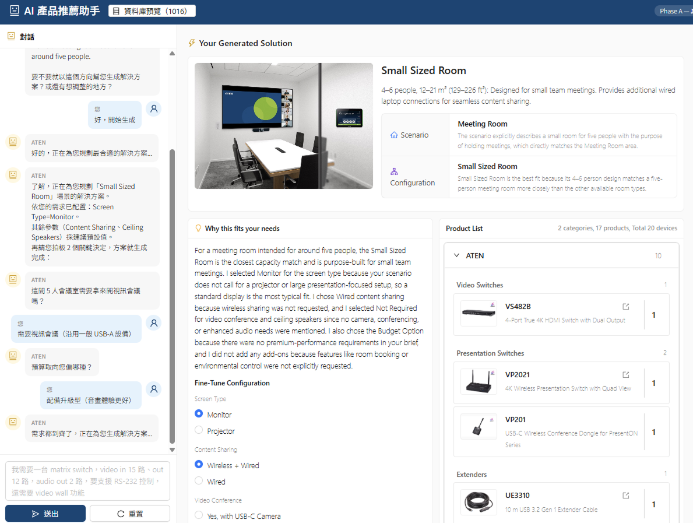
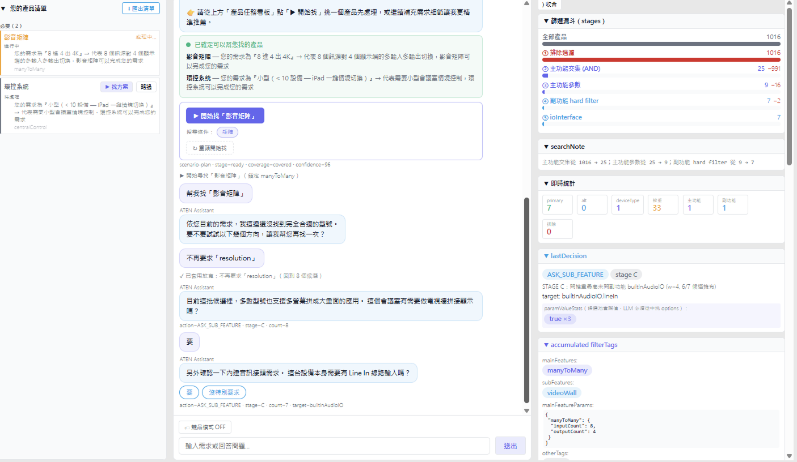
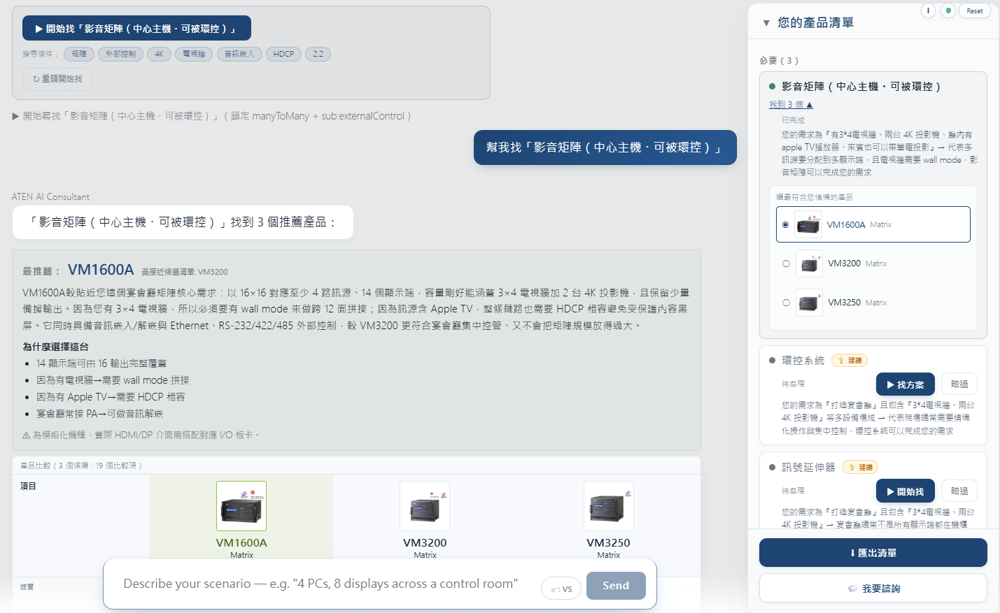

AI 製品コンサルタント Agent
LLM
の不確実性を正しい場所に置く
2026 - 現在
推薦する製品が「実在し・現行品で・仕様も正しい」ことを必須とするとき、
LLM の不確実性はどこで制御すべきか？
これは Solution Builder の AI 製品コンサルタント・モジュールです。ユーザーが自然言語でニーズを述べると （「会議室に投影したい」「サーバー室の 17 台を集中管理したい」など）、システムは約 2,000 件の実在する ATEN SKU から 正しい製品を推薦します。アーキテクチャは三世代を経ており、答えは「すべてロック」から「判断をロックし翻訳を解放」、さらに 「事実をロックし判断を解放」へと進みました——各世代は前世代の教訓への直接の応答です。
担当
対話体験設計、製品語彙（Catalog）設計、パイプライン設計とフロント／バックエンド実装、プロンプトエンジニアリング
一人の UX
デザイナーが「対話体験」と「それを信頼できるものにする工学的な仕組み」を一つの設計対象として扱う——対話上の制約はそれぞれ一つの仕組みに対応し、同じ人が同じ図の上で描き出す
プロジェクト種別
B2B AI Agent · LLM ハーネス設計 · 対話 UX · フルスタック実装
全 3 部構成のシリーズ。本稿は第 3 部で、AI Agent のアーキテクチャの変遷に焦点を当てます。 製品そのものは〈Solution Builder〉を参照； AI 検索を支える製品データの構造化については〈LLM で製品データを構造化する〉を参照。
一言のシーン説明から、すぐ使える製品リストへ
システムインテグレーター（SI）は案件ごとに、約 2,000 の ATEN 型番から、互換性があり・現行品で・仕様も正しい構成を組み上げねばなりません—— 仕様書をめくり、Excel を調べ、入出力ポートが合うか確認する。手間がかかり、間違えやすい作業です。 汎用チャットボットに直接尋ねるのはもっと危険です。もっともらしいが実在しない型番を作り出したり、生産終了品を勧めたりします。 このモジュールが目指すのは、同じ作業を「話すだけ」で完了させること。しかも全型番が実在することを保証します。
シーンを述べると、構成を返します——主アーキテクチャの接続、必要な製品ロール、各台数、選定理由； 情報が足りなければ、答えを無理に出さず、ベテラン SI のように聞き返します。リストはワンクリックで Excel に貼り付けられ、 そのまま下流の比較表・キャンバス配線図・BOM へ流せます。
| ロール | 型番 | 数量 | 理由 |
|---|---|---|---|
| シームレス切替機 | ✓ 検証済み | 1 | 3 入力 2 出力、リアルタイムのシームレス切替が必要 |
| ワイヤレス投影レシーバー | ✓ 検証済み | 1 | 来客のワイヤレス投影、配線不要 |
| 中央制御 / シーン | ✓ 検証済み | 1 | ワンタッチのシーン切替、各ソースを統合 |
ユーザーのニーズから製品リストを生成し、各型番は検証ゲートを通して実在を確認します。（型番欄は構造の例示。実画面は下のスクリーンショット参照）

フロー：情報が十分なら構成を出し、足りなければ聞き返す
聞き返しも回答も同じ対話の中で完結します——選択肢はチップで提示され、タップするだけで要件に追加、打ち直し不要です。

なぜ ChatGPT（成熟した AI 企業のチャットボット）をそのまま繋がず、この agent が必要なのか
製品データをそのまま LLM に渡すと、致命的な問題が 2 つ起きます：
ハルシネーション SKU
LLM は「もっともらしいが実在しない」型番や、すでに生産終了した製品を勧めます。 B2B の営業ツールでは、偽の型番を 1 つ勧めた時点で信頼はゼロになります。
再現できない
同じ質問でも毎回答えが変わります。SI（システムインテグレーター）は「今回はたまたま当たった」を業務フローに組み込めません。
かといって逆に「LLM をルールに完全に閉じ込める」のも駄目でした——それこそ第一世代の教訓です。
核心命題：不確実性はゼロにするのではなく、正しい場所に置く。 三世代は「境界を引く」3 度の試みです——工学の言い方をすれば、LLM のためのハーネス（制約・グラウンディング・検証の足場）を 3 度設計したということです。
境界を引く 3 度の試み
フォーム入力係
翻訳役
推論の主体
三世代とも同じ一本の境界を引き直しています——ロックする範囲は「判断」から「事実」だけへと後退し、モデルが自由に動ける余地は逆に広がります。
第一世代：固定の穴埋め
LLM の役割：フォーム入力係
固定の意図パイプライン。フィールド・聞き返し・フローはすべてハードコードされ、LLM はユーザーの言葉を固定フィールドに詰めるだけ。
結果
安全だが硬直的——高コスト・低速で、汎用大規模モデルより劣る回答。現在は対照群として凍結。
第二世代：タグの蓄積
LLM の役割：翻訳役＋ライター
LLM は「自然言語 ↔ 構造化タグ」の翻訳のみ。次に何を聞くか・いつ出力するかは純粋関数の決定エンジンが決めます。
成果
狭いクエリでは高効率（1 ターン最大 2 回の LLM 呼出）で、現在の主力。ただし案件全体の設計は組合せを列挙しきれません。
第三世代：2 つのゲート
LLM の役割：推論の主体
モデルにベテラン SI のように全体を推論させつつ、「ファクトゲート」から入場し「検証ゲート」から退場させます。
成果
複数機器の案件全体設計：主アーキテクチャの判断は正確、実測でハルシネーションゼロ、コストは一桁低減。
3 つのシステムはコードベース内に併存させ、A/B 比較のため意図的に残しています。
LLM を完全にロックした教訓
第一世代は対話を固定パイプラインに分解しました：意図ルーティング → 2 段階翻訳（まず機器タイプをロックし、次に Schema に沿って必須項目を埋める）→ 聞き返し品質の判定 → 純 JS 検索 → 分析と要約。各段で LLM は「穴埋め」だけを行い、 フィールド・聞き返し上限・手順はすべてハードコードでした。

なぜ不十分だったか
硬直的で、固定フォームを埋めるよう
3 つの固定の意図入口、フィールドと聞き返しはすべてハードコード——ユーザーは専門家と話すというより、フォームを埋めている感覚です。既製のソリューションテンプレートを探すときに特に顕著でした。
案件全体と単品が別々の経路
「単品を探す」と「ソリューション（部屋タイプのテンプレート）を探す」が別経路で、1 回の対話で多様な製品を自由に組み上げたリストが作れませんでした。
フローがハードコード
新しいシーンを 1 つ足すたびに、フロー全体に手を入れる必要がありました。
教訓：決定論を「フローと判断」にかけると、ユーザーは固定フォームに縛られます—— 安全だが、専門家との対話にもならず、自由に組んだ製品リストも作れません。問題は「制約するか否か」ではなく、制約する対象を間違えたことです。
判断は LLM に渡さない
第二世代の境界の引き方：LLM は言語の仕事だけを行い、すべての判断は純粋関数が行う。
役割分担：翻訳役は「話す」、判断は決定エンジンだけが「動かす」
質問役 エンジンが指定した問いを、選択肢付きの聞き返し文にする；回答後は「翻訳役」に戻って再実行
6 段階のファネル検索 除外 → 主機能の積集合 → パラメータ → 副機能 → ioInterface → 上位候補
データ源：製品 API（約 2,000 件の実 ATEN、
/rest/product、30
分キャッシュ）左の列が役割分担：オレンジ＝LLM の言語の仕事、青＝純粋関数による判断と事実。
このメインループは翻訳役 →（判断）→ 検索（製品 API を叩く）→ アナリスト。両端は LLM の言語の仕事で、中間の判断と絞り込みはすべて純粋関数です。 LLM はフローの方向を決して決めません——要件を翻訳し、聞き返しを書き、候補を分析にまとめるだけ。何を判断し・いつ出力し・どの製品を絞るかは、すべて純粋関数が決めます。
📚 すべての専門知識を「1 つのファイル」に集約する
どの世代の AI でも、どの機能でも、読み込む専門知識はすべて同一の構造化ファイル（JSON）に集約します： 製品の主機能／副機能の定義（マトリクスとは何か、HDCP とは何か、パラメータと別名）、現場情報（各シーンで何を聞き・何を除外するか）、 業界の know-how（確定的な常識、アーキテクチャ指針、聞き返し文）。
機能を 1 つ追加 = JSON を 1 件編集するだけ。翻訳・判断・検索・聞き返しが自動で追従し、コードもプロンプトも変えません—— 一度直せばどこでも反映され、知識が二重管理でズレることもありません。しかもこのファイルはエンジニアの保守が不要： ビジュアルエディタが付属し、PM・SI・製品担当がコードを書かずに自分で記入・編集できます。
Featurecatalog.json 知識マスターファイル（信頼できる唯一の出所）
feature-catalog-editor.html 専門家向けのビジュアルエディタ
専門家が記入するのはこれらの項目——別名、聞くべきパラメータ、聞き返し文です。AI はこのファイルから読み、人も同じファイルを編集します： 人と AI が同じ知識の上で協働することこそ、このシステムの本当の働き方です。

ハルシネーション対策：プロンプトの注意書きではなく、仕組みにする
選択肢は実在の値からのみ
聞き返しのクイック選択肢は「候補プールに実際に存在する仕様値」から選ぶ必要があります—— LLM はプールに無い値を提案できません。
ハルシネーション値の検出
LLM が存在しない値を出しても、純粋関数の層が検出し、「条件を緩める」提案へ変換します。
競合の解決は LLM を通さない
過去の教訓：「2 つの機能が競合したときの選択肢」を LLM に作らせるとハルシネーションが起きます。 Catalog のシーン例文から直接選ぶ方式に変え、LLM は一切関与させません。
コスト設計：1 ターン最大 2 回の LLM 呼出
LLM の手前に 3 つの前段ルーティングを置き、モデルを呼ばずに済むなら呼びません：
Fast Lane
純粋関数のキーワードが「PM が内面化したシーン → 製品セット」に命中すれば、LLM 0 回でそのままリストを出します。
軽量分類器
初回ターンで脱線かどうか・どのシーンに命中したかを判定し、プロンプトに必要な部分だけを読み込ませます。
Scenario Planner
シーン命中・聞き返しプールの縮小・タスクテンプレートの導出は、すべて純粋関数で事前計算。LLM は自然言語の抽出と文章書きだけを行います。
限界：なぜ第三世代が必要だったか
案件全体の設計は組合せを列挙しきれない
狭いクエリ（「4 ポート 4K の KVM 切替器」）はとても得意です。しかし案件全体の設計（宴会場：ビデオウォール＋プロジェクター＋カメラ＋来客 PC＋中央制御）には組合せ推論が要ります——あらゆるタスクの組合せを事前にテンプレ化すると、保守量が爆発し、永遠に書き終わりません。
毎ターン知識ベースを再投入するので高コスト
呼出回数を 1 ターン 2 回に抑えても、毎回 製品知識ベース全体をモデルに渡します——コストの大半は繰り返しの入力に費やされ、ターン数とともに積み上がります。
ハードコードした組合せテンプレは静かに陳腐化する
自社のテスト例ですら誤っていました：宴会場の組込み例は「12 入力 8 出力」と書かれていましたが、実際の要件は「4 入力 14 出力」でした。
この 3 点がそのまま第三世代へつながります。
推論をモデルに返し、2 つのゲートで挟む
第三世代は教科書的な agent harness です：function-calling の推論ループ（ツール上限 8 ステップ）が判断を担い、 入口のファクトゲートと出口の検証ゲートがグラウンディングを担う——モデルは自由に推論し、事実の面は固く挟まれます。
核心原則：決定論の境界を正しい場所に引く
目指すのは「ばらつきゼロ」ではなく「有界のばらつき」：事実はロック、判断は解放。 ランダム性は「どう聞くか・どう組むか・どう書くか」にだけ残します——それは元々モデルに委ねるべきものです。
フロー：入口にファクトゲート、出口に検証ゲート
「宴会場、3×4 のビデオウォール、4K プロジェクター 2 台、Apple TV、来客 PC」
Apple TV
を検出 → HDCP を必須化；ビデオウォール
を検出 → タイリング能力を必須化仕組みが保証する 3 つの振る舞い
この 3 つは設計上の保証であって、テスト結果ではありません——型番が実検索に合致しなければ、純粋関数が通しません。
でっち上げを止める
リストを出す前に、各型番を実検索結果と 1 つずつ照合。合わなければリストごと差し戻し——架空の型番や生産終了品は出られません。
正直に空欄にする
あるロールに合う実在製品が見つからないとき、無理にこじつけるのは禁止——ルール上、聞き返すか「現状の範囲外」と明記するかのみ。
理由のある判断
集中型か分散型かといった全体判断は AI に委ねますが、判断理由とどのルールが発火したかの明示が必須——確認・監査が可能です。
保守するのはフローではなく、3 種類の「知識ブロック」
確定ルール
X なら必ず → Y、決定論的に発火。
Apple TV / PS5 / Blu-ray → HDCP 2.2；フロアを跨ぐ → IP 経由
シーン台本
何を聞くか・何を除外するか・主アーキテクチャの指針・必要な製品ロール。
宴会場：規模と配置を聞く；KVM を除外；出力 >9 またはゾーン跨ぎ → 分散型
実製品の検索
第二世代と同じ純粋関数の検索を共用し、モデルのツールになります——モデルは検索結果からしか型番を選べません。
第二世代でハードコードしていた 14 種のタスクテンプレートと 4 層の設定マージは、この経路ではまるごと削除—— 有限のブロックだけを維持し、無限の組合せはモデルにその場で組ませます。

実測結果（3 シーンの headless 検証）
検証ゲートは理論ではない——実際にハルシネーションを止めた
会議室シーンの初回ターンで、モデルは存在しない型番を 2 つ推薦しましたが、検証ゲートが実測で阻止； 修正後はハルシネーションが消え、3 案すべて実在 SKU で着地しました。
正直に空欄にする
見つからなければでっち上げず、質問するか正直に「範囲外」と宣言します—— 無理に答えを出すチャットボットではなく、ベテラン SI のように振る舞います。
コストが一桁下がる
1 案あたり 3.7〜4.9K トークン。第二世代の 1 ターン約 58K に対し、およそ 6〜15 倍の節約（社内実測、同等級モデル）。 さらに手つかずの第 2 層があります：第三世代は知識を 1 ファイルに集約しプロンプト接頭辞も固定なので、入力キャッシュと相性が良い—— 1 案あたりの使用量が小さく、繰り返す冒頭部分にさらに割引が効きます。
差は手法の違いから：第二世代は毎ターン製品知識ベース全体をモデルに再投入しますが、第三世代はモデルにツールで検索させ、命中した候補だけを返します。
おまけ：多言語対応
第一世代では N 言語に対応するため、聞き返し文ごとに N 本の翻訳を保守する必要がありました。第三世代では聞き返しと構成の記述を、モデルがユーザーの言語でその場生成し、 一字一句の正確さが要る部分（法的免責、BOM のヘッダー）だけ既存翻訳にロックします。 アーキテクチャを正しく選べば、多言語対応はコストから標準機能へ変わります。
三世代を通じて変わらない 4 つの原則
唯一の成果物は「検証済みの製品リスト 1 枚」
比較表、キャンバス配線図、BOM 出力、アクセサリー推薦はすべてこのリストを消費します。 AI の仕事を 1 つに収束させるからこそ、下流が安定して受け取れます。
知識はデータに置き、プロンプトの散文には置かない
Catalog・台本・確定ルールはすべて構造化データで、翻訳・判断・検索の三者が共用できます； プロンプトに書いた知識は、モデルが「覚えている」間しか存在しません。
決定論的なロジックはすべて純粋関数
決定エンジン、検索ファネル、設問プールの縮小、トポロジー導出はすべて副作用のない純粋関数—— 単体テスト可能・再現可能で、フロントエンドと Node の間で移植できます。
ハルシネーションは仕組みで止める。LLM プロンプトの注意書きでは止めない
三世代を通じて有効だったハルシネーション対策は、最終的にすべて仕組みになりました——第二世代のハルシネーション値検出から、第三世代の「検索結果に無ければ差し戻して再選定」する検証ゲートまで、プロンプトの言い回しに頼ったものは 1 つもありません。
なぜ「汎用モデルをユーザー自身に使わせる」で済まないのか
第一世代の教訓には、より鋭い問いが潜んでいます：汎用の大規模モデルの方が完全に答えるなら、このモジュールが存在する理由は何か？ 答えは「我々の判断の方が汎用モデルより正確だから」ではありません——判断は 100% 正確である必要はないのです。100% が要るのは別の 2 つです。
差別化（堀）は、汎用モデルには出せない 2 つ——製品情報が 100% 正確であること、そしてリストを実装までつなぐ専用アプリケーションです。 三世代とも唯一の成果物を「検証済みリスト 1 枚」に収束させたのはこのためです：それは工学上の制約であると同時に、製品の足場でもあります。
なぜこれが UX デザイナーの課題なのか
純粋な ML エンジニアリングは目標を「モデルが正解する」に置きがちで、聞き返しの体験を見落とします—— しかし B2B では「ベテラン SI のように聞く」こと自体が信頼の源です。 純粋な UX は対話のあるべき形を知っていても、ハーネスを設計する工学的手段を持たず——「判断と事実を階層に分ける」ことができず、プロンプトの言い回しで無理に調整するしかありません。 このモジュールでは、聞き返し選択肢の設計、Catalog の語彙設計、決定エンジンの純粋関数の境界、プロンプトからの役割の切り出しが、 同じ人が同じ図の上で描き出したものです——対話体験のあらゆる制約が、そのまま 1 つの工学的な仕組みに対応します。 ハーネスを設計する深さは、対話体験を設計する深さでもあり、その逆もまた然りです。
現状
第一世代は A/B の対照群として凍結、第二世代は現行のデモかつ狭いクエリの主力、 第三世代は核心の検証とフロント／バックエンド連携（複数ターンの聞き返し、BOM コピー、推論ステップの可視化）を完了。 現在の天井は製品タグのカバレッジ（シーンの約 3 割をカバー）であって、アーキテクチャではありません—— 次は不足する製品ファミリーのタグを埋め、実案件でブラインド A/B を行います。
本文中のトークン数と時間の数値は社内開発の実測で、桁感の参考用です。
リストを手にしてから、ユーザーの旅が始まる
AI の唯一の成果物は「検証済みの製品リスト 1 枚」です。しかしユーザーにとっては、リストを得てからが始まり—— この先はAI に渡しません：これらは製品データが直接駆動する決定論的なサービスフローで、間違いが起きず、そしてこれから設計していく部分です。
体験の全体導線
チャットは前半（要件の収束、リスト生成）で最も価値を発揮します。後半の詳細閲覧・差替え・アクセサリー選びは、既存のブラウズ UI に任せた方が体験が良い——まさに設計チームが力を発揮できる領域です。
リスト後のフロー枠組み（非 AI・設計予定）
リスト確定後、製品データから対応するケーブル・ドーターカード・追加購入の選択肢を自動で引き出します——ルール照合で、AI に推測させません。
保証・認証など購入判断に必要な情報を、製品ライブラリから直接リストに取り込みます——速く、しかも正確さが保証されます。
対話からシームレスに Builder へ移り、作図・編集・見積もりなど、より深いサービスへ続けます。
専用アプリケーション：2 つのルート
① チャットが直接サービスを提供
対話の中で「見えて・持ち帰れる」成果物を得る
AI が配線図を直接描く
Builder が編集機能を AI に開放し、構成を仕上がった配線図として描き出します。
対話の中で BOM 帳票を生成
Builder の BOM 生成と連携し、その場で PDF と Excel を出力します。
Salesforce と連携
構成と要件のデータが CRM へ流れ、営業がそのままフォローできます。
② Builder へ誘導
対話の成果を、Builder に入る理由に変える
製品リストをワンクリックで Builder 編集へ
AI が出したリストをそのまま Builder に入れ、すぐ編集を体験。あるいは描き終えたアイデアをそのまま相談できます。
リストに応じて Builder のツールを提示
リストに応じて製品／ドーターカード／Audio セレクター、VK 計算機を提供。Audio や VK のような論理的な選択は、AI より専用ツールの方が適しています。
制約を正しい場所に置けば、モデルは力を発揮できる
このモジュール最大の収穫は、1 つの境界原則です：事実はロック、判断は解放。 第一世代はフローまでロックして、硬直したフォーム入力機になりました。第三世代は事実だけをロックし、推論力が戻り、それでもハルシネーションは 2 つのゲートで門前払いされます。 LLM を本格的な製品に組み込むあらゆるチームにとって、「不確実性をどこに置くか」は最初に答えるべき設計課題です—— それを「対話体験とハーネスの同じ 1 つの課題」として解けることこそ、UX デザイナーが立てる場所です。